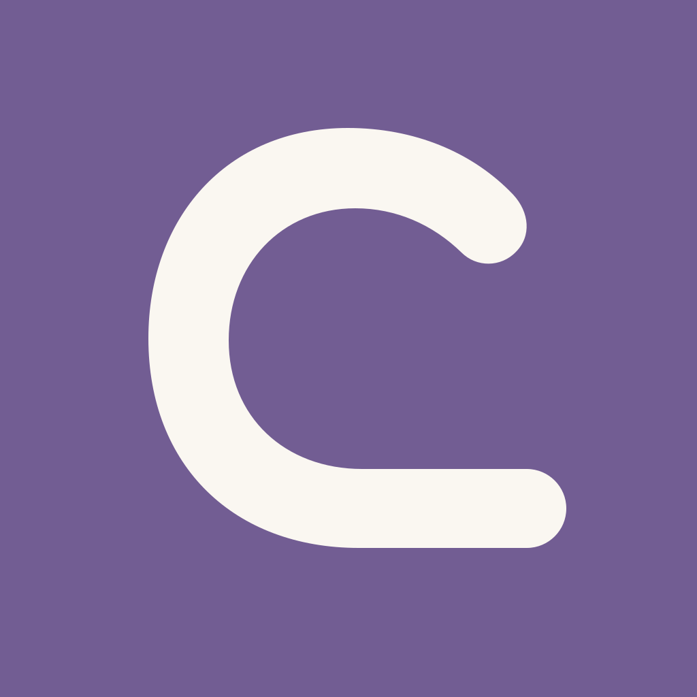
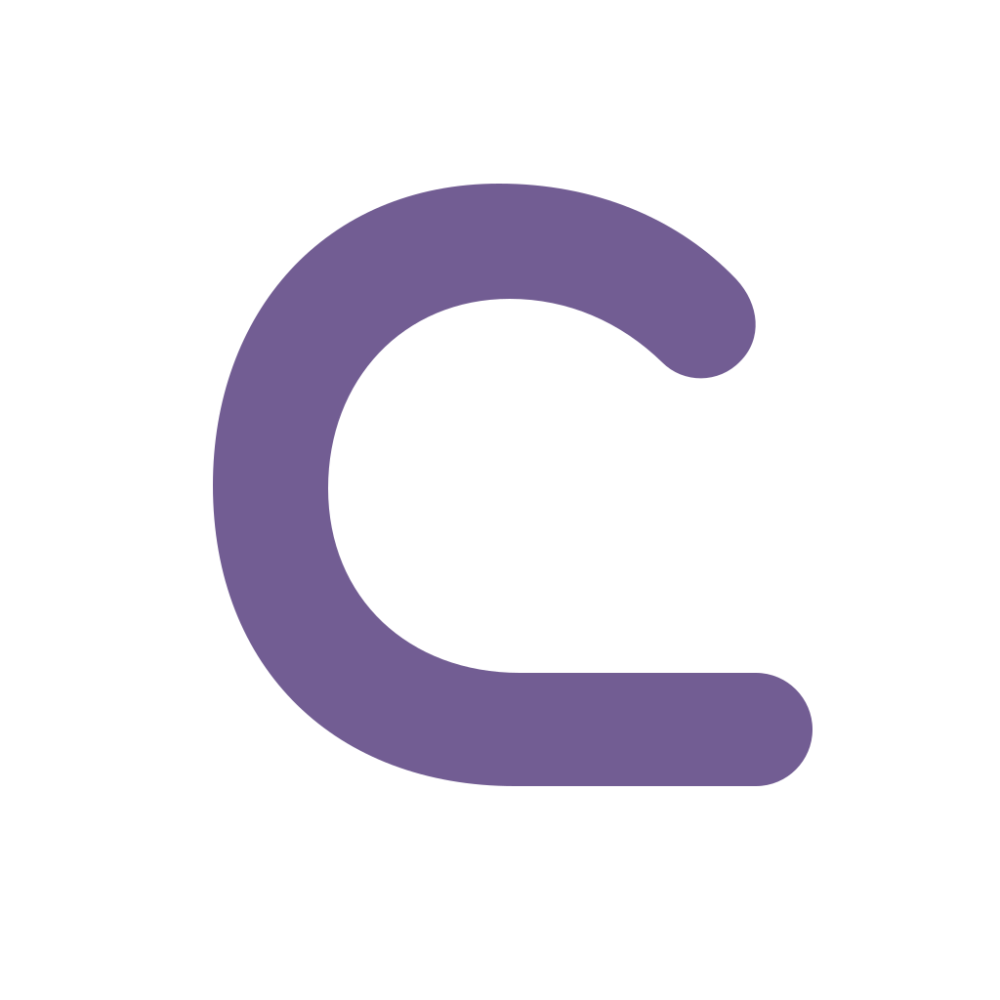
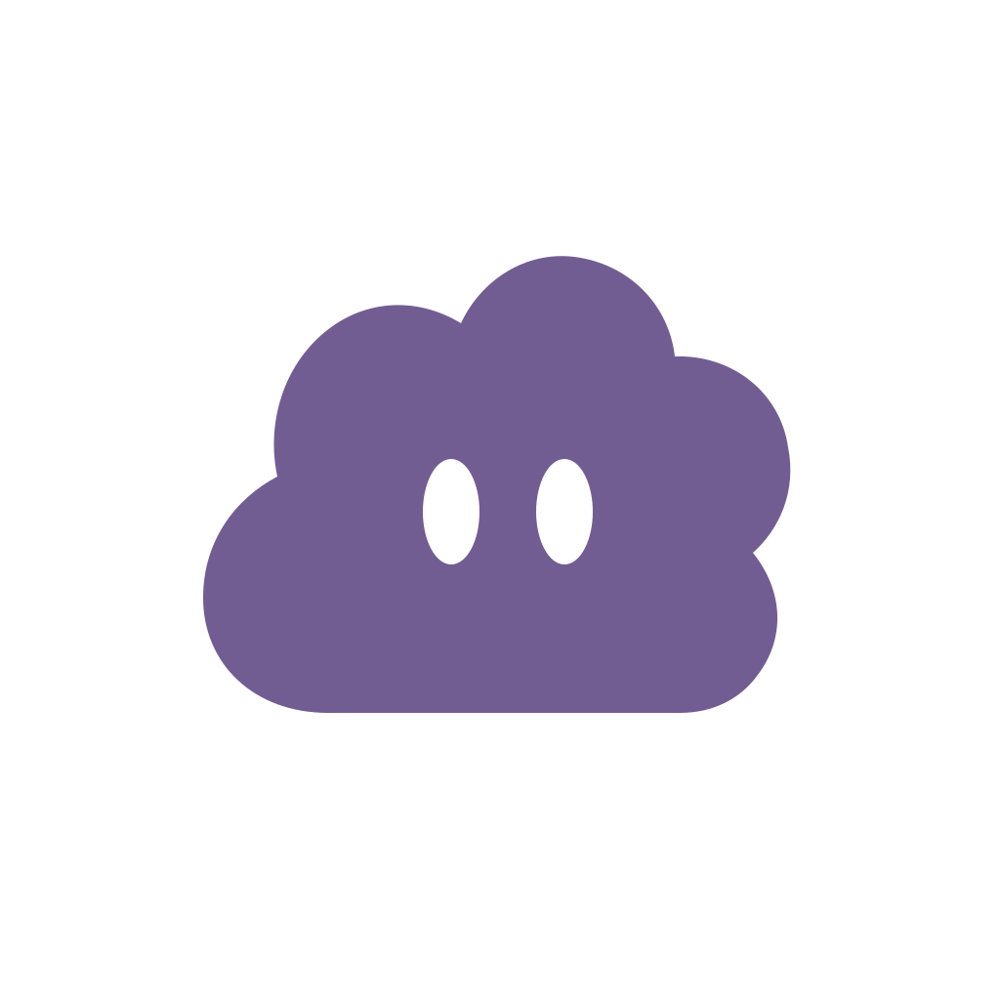

① 名称标记
C 与一条线，把名字变成标记。
需避免像普通字母或圆环。

CheckLine预算线
CHECKLINE · APP ICON
重新比较名称、角色与确认动作。每个方向只保留一个记忆点。

C 与一条线，把名字变成标记。
需避免像普通字母或圆环。

简化轮廓，让陪伴成为辨识。
与名字的联系需要共同建立。

检查与边界，收成一笔。
需避免被认作待办工具。
浅色桌面 · 60 / 32 px
深色桌面 · 60 / 32 px